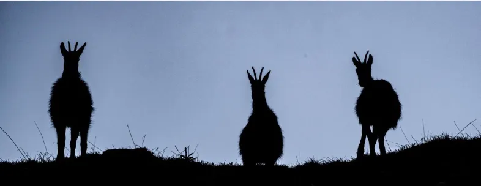
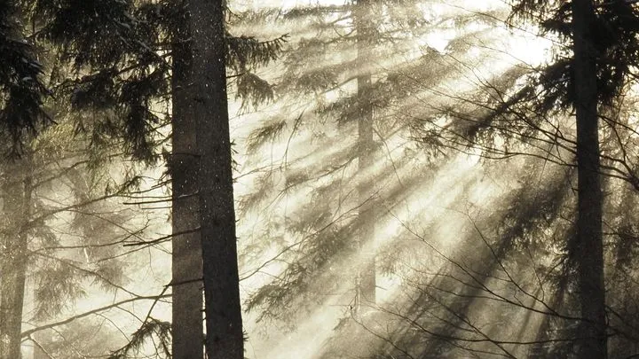
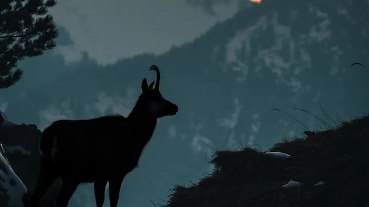
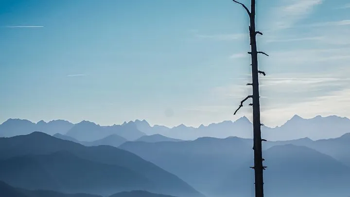
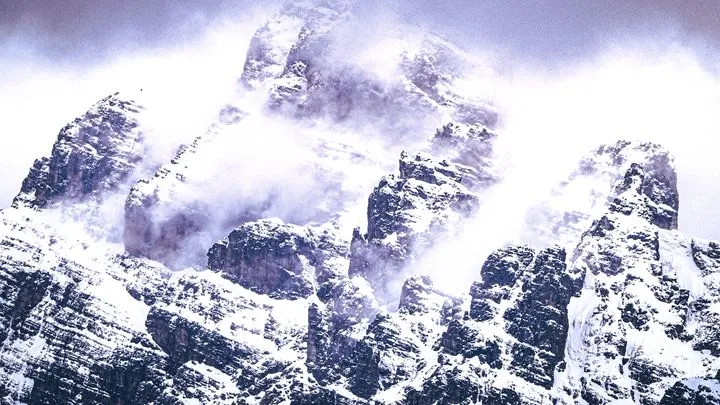

Der Film
Sechs Wochen im Jahr riskieren die Gamsböcke alles. Sie jagen sich durch steile Felsen, fressen kaum und verbrennen die Reserven, die sie für den Winter brauchen. Ich folge ihnen durch die Brunft in den bayerischen Alpen, bis der erste tiefe Schnee kommt. Und zeige, warum es danach auch an uns liegt, ob sie den Winter schaffen.

Die Geschichte
Suchen, finden, bezahlen: Der Film folgt der Uhr der Brunft. Er zeigt das Spektakel und den Preis dahinter. Er endet nicht im Alarm, sondern mit zwei Regeln, die jeder sofort umsetzen kann.
Wer dabei ist
Ein Berufsjäger, der die Einstände kennt. Die Wildtierexperten von Wildes Bayern. Beide waren schon beim ersten Film dabei.
Der Beweis
Kurzfilm „Die Wächter der Berge“: youtu.be/NEvhhDN1aYk. Gewinn beim Mo & Friese Film Festival, Nominierungen u. a. DOK.fest und München Film Awards. Filme für das Naturparkhaus Zillertal, die Teufelshöhle Pottenstein und das Bayerische Donaumoos.
Die Serie: Bis die Brunft vorbei ist
Der Weg zum Film, in vier Folgen: der Wecker um vier, die leeren Hänge, die Menschen vor Ort und der eine Moment, für den sich alles lohnt. Gegen eine echte Frist, denn die Brunft wartet auf niemanden. Je 8 bis 12 Minuten auf YouTube, dazu 2 bis 3 Reels pro Folge auf Instagram und TikTok. Release jeweils sonntags, 18 Uhr.

Finden wir sie?
Hohneck in den Vogesen, ein Wochenende, ein Zeitlimit. Findet er die Brunft?

Was vom Bock bleibt
Selbst einen Gamsbart binden, und die Frage, wie viele Gämsen darin stecken.

Let’s get the drone up
Darf ich fliegen? Drei Tore, zwei Interviews und eine unbequeme Frage.

Bis es fertig ist
Tiefschnee, Schnittplatz und die Abgabe am 15. Januar.
Werde PartnerDas bekommst du dafür
Hauptpartner Region
„In Zusammenarbeit mit“ im Vorspann, Nennung in allen vier BTS-Folgen, drei Clips und zehn Fotos aus deiner Region, eine Vorführung bei dir vor Ort.
Partner
Nennung im Abspann und in einer BTS-Folge, ein Clip und fünf Fotos für deine eigenen Kanäle.
Ausrüstungspartner
Deine Ausrüstung im echten Winterdreh, ehrlich gezeigt, Fotos inklusive.
Bezahlte Nennungen werden als Partnerschaft gekennzeichnet. Im Januar erhalten alle Partner ein Mediakit mit den echten Zahlen aller vier Folgen.
Die Brunft läuft, die ersten Drehtage sind im November. Schreib mir kurz, was dich anspricht. Den Rest erzähl ich dir persönlich.
Drehkodex: Drohne nur wo erlaubt und nie über den Tieren, keine Schongebiete, Abstand halten. Kein Bild ist eine Flucht wert.
Photographer & Filmmaker
+49 160 95343253
xaverszimmer@web.de
mutternaturstory.com · @xaverszimmer